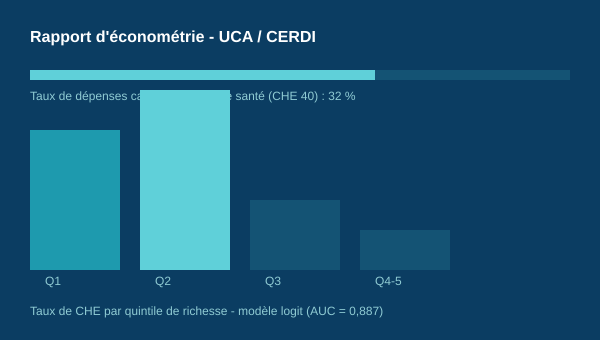

Dépenses de santé et difficultés financières
Analyse des dépenses catastrophiques de santé en Côte d’Ivoire à l’aide de modèles Logit et LPM.
Voir la méthode et les livrables
Impact du niveau d'éducation du chef de ménage sur la probabilité d'encourir des difficultés financières liées à l'accès aux soins en Côte d'Ivoire
Problématique
Dans quelle mesure le niveau d'éducation du chef de ménage influence-t-il la probabilité pour un ménage de rencontrer des difficultés financières lors de l'accès aux soins en Côte d'Ivoire ?
Méthodologie
Exploitation des microdonnées de l'Enquête Harmonisée sur les Conditions de Vie des Ménages (EHCVM 2021, Banque mondiale, 13 693 ménages) ; construction d'un indicateur de dépenses de santé catastrophiques selon l'approche OMS (seuil de 40 % de la capacité de paiement, ODD 3.8.2) ; estimation de modèles logit et de probabilité linéaire (LPM) avec effets fixes régionaux ; évaluation par courbe ROC/AUC et diagnostics de robustesse (VIF, matrice de corrélation).
Résumé des résultats
- Incidence des dépenses catastrophiques de santé : 32 % (échantillon), soit 27,3 % après pondération - un résultat proche de l'estimation de l'OMS pour la Côte d'Ivoire (28,85 %)
- Une éducation secondaire est associée à une légère hausse du risque, tandis qu'une éducation supérieure exerce un effet protecteur marqué (odds réduites d'environ 46 %)
- Le niveau de vie, la ruralité, la taille du ménage et la présence d'enfants de moins de 5 ans ou de personnes âgées constituent les déterminants les plus robustes
- Modèle logit très performant (AUC = 0,887), confirmé par un modèle de probabilité linéaire (LPM)
Compétences mobilisées
Économétrie appliquée (modèles logit / LPM), langage R, nettoyage et fusion de bases de données (EHCVM), construction d'indicateurs de protection financière (OMS / ODD 3.8.2), revue de littérature scientifique, rédaction académique sous LaTeX.
Université Clermont Auvergne - CERDI · Master Économie du Développement, parcours Économie de la Santé
Rapport d'économétrie réalisé en binôme avec Koku Bernard Batse, sous la direction d'Anne Viallefont et Catherine Korachais.